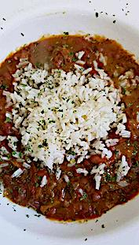

Food
HOME
FOOD
DRINK
MUSIC
CONTACT
Food Index
Beef & Broccoli
Short Ribs, Veg Medley & Steamed Rice
Beer-Braised Short Ribs & Root Veg
Catfish Sandwich & Seasoned Fries
Corned Beef & Cabbage
File Gumbo
Flank Steak & Garlic Roasted Potatoes

Red Beans & Rice
Salmon, Steak, Grill Chicken & Sides
Seafood Boil
Smothered Pork Chop w/ Gravy & Mashed
Southern Fried Chicken